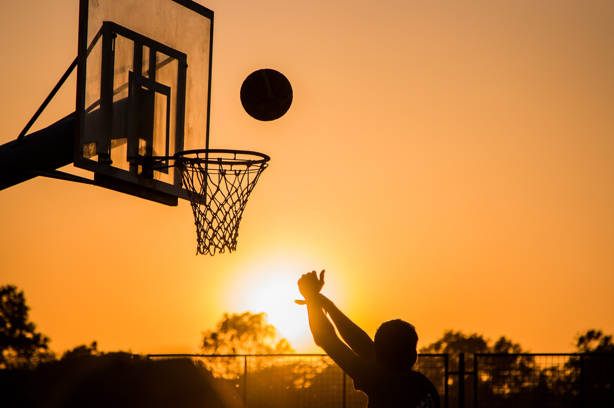

느낀점
개인별

『농구』
농구는 구기 정목 중 하나로, 공을 림에 넣는 것을 득점으로 하여, 제한시간안에1점이라도 더 높은 쪽이 승리하는 경기이다. 한 팀당 5명의 선수가 선발된다.
대충 여기다 적으세요
-농구의 역사
오늘날 알려진 농구 경기는 추운 달 동안 어린 선수들을 훈련시키기 위해 1891년 12월 메사추세츠 스프링필드에서 제임스 네이스미스 박사가 만들었다.
네이스미스는 매사추세츠주 스프링필드에 있는 YMCA 국제 트레이닝 스쿨(현재의 스프링필드 칼리지)의 체육 강사였습니다.상사의 요청으로 네이스미스는
추운 날씨에 선수들이 몸매를 유지할 수 있도록 실내 스포츠 게임을 만드는 임무를 맡았다.그것은 복숭아 바구니와 축구공으로 구성되어 있었다.
그는 새로운 게임에 대한 13가지 규칙을 발표했다.그는 18명의 반을 9명씩 두 팀으로 나누고 자신의 새로운 게임의 기본을 가르치기 시작했다.
그 게임의 목적은 체육관 발코니 아래 난간에 못박힌 과일 바구니에 농구공을 던지는 것이었다.득점을 할 때마다 경기가 중단되어 관리인이 사다리를
가지고 나와 공을 회수할 수 있었다.잠시 후, 과일 바구니의 바닥이 제거되었다.
최초의 공개 농구 경기는 1892년 3월 11일 매사추세츠의 스프링필드에서
열렸다.
농구를 하면서 느낀점
(위현찬) : 농구 수행평가를 준비하는중에 농구의 드리블을 하는 것이 매우 어려웠다.하지만 체육 발표 수행평가를 위해 농구라는 운동에 대해 조사하게 되면서 농구에 대해 더 알게되었고
농구를 잘하기 위해서는 공에 익숙해 지는 연습인 드리블이 매우 중요하다는 것을 알게 되었다.
조사 이후에는 수행평가를 치르기 전까지 드리블을 주로 연습했는데 그 결과 전보다 훨씬 공이 손에서 떠나가지 않고 안정적인 결과가 나온 것 같다.
(김동현) : 농구 수행평가를 위해 농구연습을 하면서 농구를 전에는 많이 하지 않았기 때문에 많은 어려움이 있었다.
하지만 처음에는 안되던 레이업도 체육조장이 열심히 알려준 결과로 많이 늘게되었고, 결과적으로 레이업에 자신감을 가지게 되었다.
이를 통해 막연히 어렵게만 느껴지는 일 조차도 협력을 통해 서로 부족한 점을 채워간다면 혼자 익히는 것보다 더욱 빠르고, 효과적으로
좋은 결과를 만들 수 있다는 것을 깨달았다.